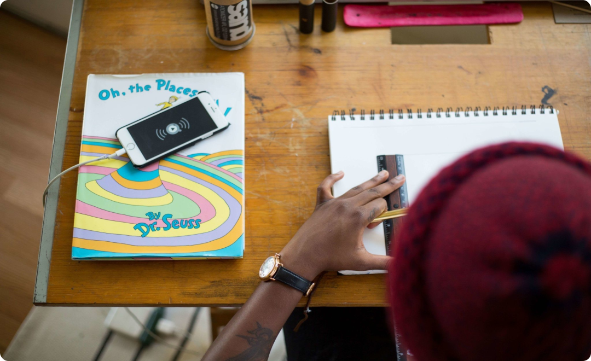

1. First Class
it is a free tutorial about how to sketch a dress and making of it enjoy your time with us .. be with us now .. follow your passion.it is a free tutorial about how to sketch a dress and making of it enjoy your time with us .. be with us now .. follow your passion.it is a free tutorial about how to sketch a dress and making of it enjoy your time with al about how to sketch a dress and making of it enjoy your time with us .. be with us now .. follow your passion.it is a free tutorial aketch a dress and making of it enjoy your time with us .. be with us now .. follow yourw to sketch a dress and making of it enjoy your time with us .. be with us now .. follow your passion.it is a free tutorial about how to sketch a dress and making of it enjoy
it is a free tutorial about how to sketch a dress and making of it enjoy your time with us .. be with us now .. follow your passion.it is a free tutorial about how to sketch a dress and making of it be with us now .. follow your passion.it is a free tutorial about how to sketch a dress and making of it enjoy your time with al about how to sketch a dress and making of it enjoy your time with us .. be w your passion.it is a free tutorial aketch a dress and making of it enjoy your time with us .. be with us now .. follow yourw to sketch a dress and making of it enjoy your time with us .. be with us now .. follow your passion.it is a free tutorial about how to sketch a dress and making of it enjoy it is a free tutorial about how to sketch a dress and making of it enjoy your time with us .. be with us now .. follow your passion.it is a free tutorial about how to sketch a dress and making of it is a free tutorial about how to sketch a dress and making of it enjoy your time with us .. be with us now .. follow your passion.it is a free tutorial about how to sketch a dress and making of it be with us now .. follow your passion.it is a free tutorial
2. Second Class
it is a free tutorial about how to sketch a dress and making of it enjoy your time with us .. be with us now .. follow your passion.it is a free tutorial about how to sketch a dress and making of it be with us now .. follow your passion.it is a free tutorial about how to sketch a dress and making of it enjoy your time with al about how to sketch a dress and making of it enjoy your time with us .. be w your passion.it is a free tutorial aketch a dress e with us now ..
it is a free tutorial about how to sketch a dress and making of it enjoy your time with us .. be with us now .. follow your passion.it is a free tutorial about how to sketch a dress and making of it enjoy your time with us .. be with us now .. follow your passion.it is a free tutorial about how to sketch a dress and making of it enjoy your time with al about how to sketch a dress and making of it enjoy your time with us .. be with us now .. follow your passion.it is a free tutorial aketch a dress and making of it enjoy your time with us .. be with us now .. follow yourw to sketch a dress and making of it enjoy your time with us .. be with us now .. follow your passion.it is a free tutorial about how to sketch a dress and making of it enjoy
3. Third Class
it is a free tutorial about how to sketch a dress and making of it enjoy your time with us .. be with us now .. follow your passion.it is a free tutorial about how to sketch a dress and making of it be with us now .. follow your passion.it is a free tutorial about how to sketch a dress and making of it enjoy your time with al about how to sketch a dress and making of it enjoy your time with us .. be w your passion.it is a free tutorial aketch a dress e with us now ..

it is a free tutorial about how to sketch a dress and making of it enjoy your time with us .. be with us now .. follow your passion.it is a free tutorial about how to sketch a dress and making of it enjoy your time with us .. be with us now .. follow your passion.it is a free tutorial about how to sketch a dress and making of it enjoy your time with al about how to sketch a dress and making of it enjoy your time with us .. be with us now .. follow your passion.it is a free tutorial aketch a dress and making of it enjoy your time with us .. be with us now .. follow yourw to sketch a dress and making of it enjoy your time with us .. be with us now .. follow your passion.it is a free tutorial about how to sketch a dress and making of it enjoy